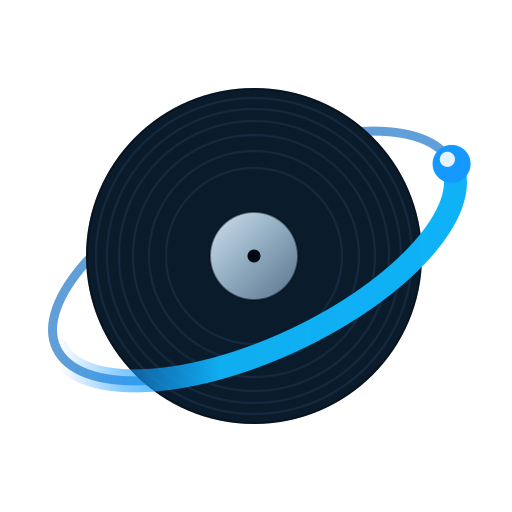
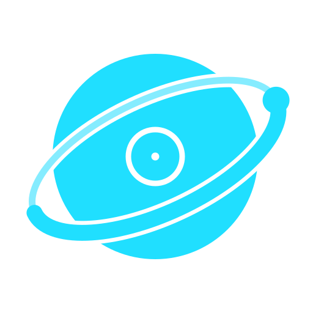
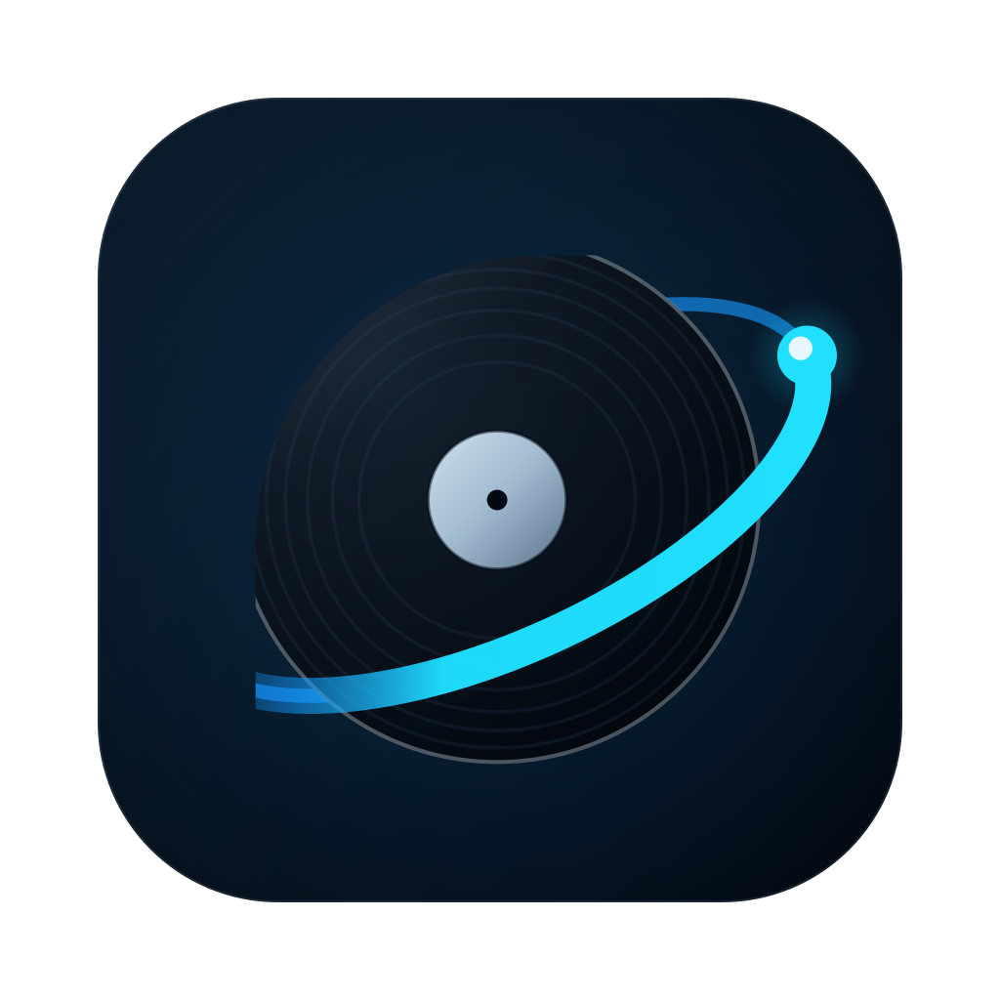
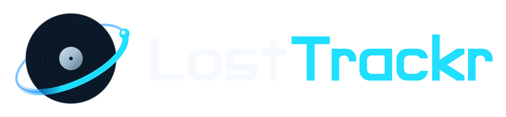
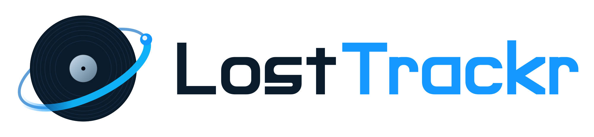

1 — Mark sur les 4 fonds de reference
#020812
#06121E

#FFFFFF (variante light)
transparence
monochrome blanc

monochrome cyan
2 — Echelle du mark (taille reelle, fond cockpit)
256
128
64
32
16
3 — App Icon (macOS) a l'echelle

128
64
48
32
16
4 — Contextes reels de l'application
sidebar — height:34px
label du vinyle — 46%, opacity .62
Base de connaissances LostTrackr
Service de reference
carte Base de connaissances — 30px
5 — Lockups horizontaux

dark sur #020812

light sur blanc (fond DMG)